Cloud4SOA
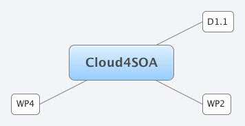
D1.1
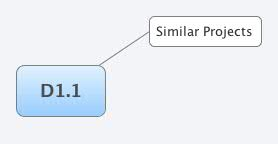
Similar Projects
interesting ones
CumuloNimbo
4CaaSt
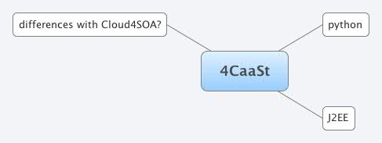
python
J2EE
differences with Cloud4SOA?
semantics
runs on its own infrastructure?
less interesting
Cloud-TM
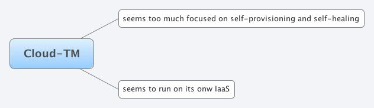
seems too much focused on self-provisioning and self-healing
seems to run on its onw IaaS
Mosaic
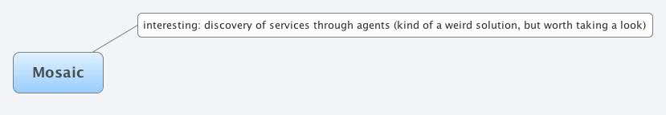
interesting: discovery of services through agents (kind of a weird solution, but worth taking a look)
WP2
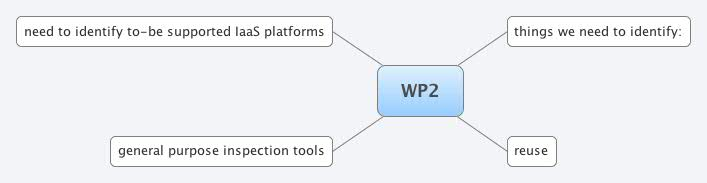
things we need to identify:
set of resources to describe
Services
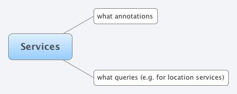
what annotations
what is a service?
what is a cloud service?
what queries (e.g. for location services)
what would a user ask to find a service?
need for mashups?
Platform
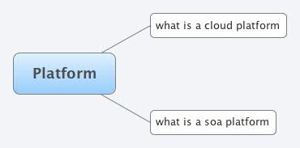
what is a cloud platform
what is a soa platform
reuse
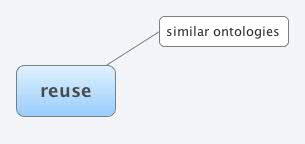
similar ontologies
need to identify to-be supported IaaS platforms
semantic description of such platforms
identify shared concepts
general purpose inspection tools
e.g. evolution of sparallax?
integration with wikis (eg. semantic mediawiki)
WP4
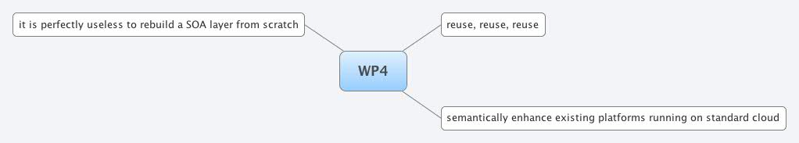
reuse, reuse, reuse
from similar projects
from OSS IaaS platforms (choose one as a reference, and another one as a testbed for portability)
reference
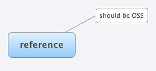
should be OSS
testbed
semantically enhance existing platforms running on standard cloud
e.g. wso2
it is perfectly useless to rebuild a SOA layer from scratch


.jpg)


.jpg)